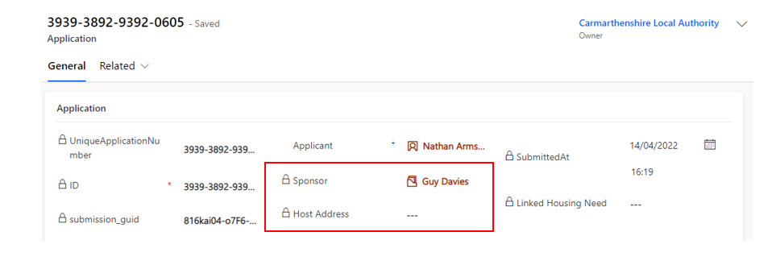
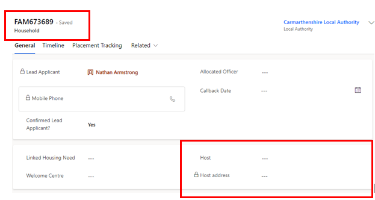
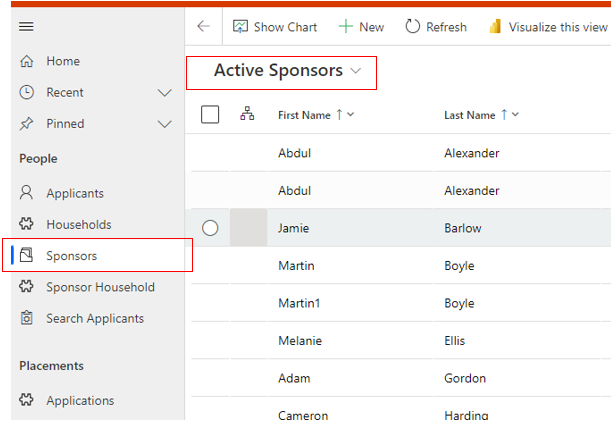
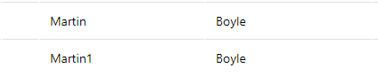
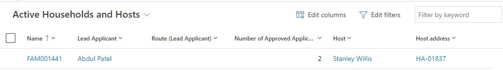
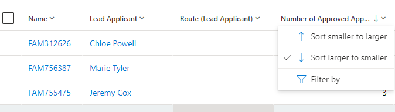
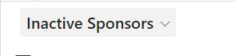
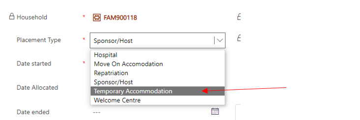
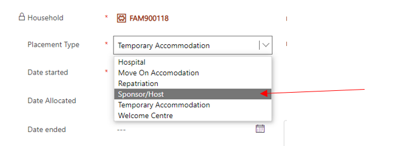

Data Platform Champions have been established across all Local Authority and Health Board areas to provide localised support and training to colleagues within their business areas.
To support the onboarding of new users, we have developed a number of resources to help you and your colleagues become familiar with the Data Platform and its various functions and features.
These include:
A set of presentation slides and accompanying script to be used when introducing new users to the Data Platform.
A series of short tutorial videos, demonstrating how to use some core features of the Data Platform.
A set of Frequently Asked Questions about how the Data Platform works, the kinds of data it holds, the checks that can be recorded and how it will evolve.
Use the sidebar navigation to explore these resources and feel free to use them in your local onboarding and training sessions.
If you have any feedback on the quality or accuracy of the information in these resources, please let us know by emailing NationOfSanctuarySurvey@gov.wales
Training slides and script
You can download the training presentation slides as a Microsoft PowerPoint file and the accompanying script as a Microsoft Word document using the links below:
A selection of step-by-step video tutorials demonstrating how to perform some of the key functions of the Data Platform
Searching for a record
Video transcript
To Search for a record in the system there are two ways you can do this.
So, you can either go to the top search box in the right-hand side here, which will search the section of the system that you're currently in.
So, as you can see here, I'm in the applicant section.
So, if I type in Jones and click enter it will return any record with the name Jones linked to it.
So, as you can see here these are all the applicants with the surname Jones.
To do a more wider search of the system you can use the search box at the top of the page.
So again, typing in Jones at the top here, if you just click enter, it will show you all records within the system that have the surname Jones.
So, it's split into different sections. As you can see you've got all sponsors here, all applicants or all applications.
Changing status codes
Video transcript
As individuals on the Super Sponsor and Individual Sponsorship schemes move through our systems, it'll be necessary to change their journey status codes to reflect their progress.
So we can change that for both individual records, and we can also do that through the household ID to edit the records at the same time of all of the members of the household.
So to edit one person's record, so in this case Carol's record, we come to the SS journey status and we click the dropdown and once you're ready to change their status, you simply click the next status on the list and save.
And that has now applied that status change to Carol's record.
Now if we click on the household ID, you can see that we have another member of the household and this person is also ready to move on and to change their journey status.
So in fact, if we wanted to change the records of everyone in the household group, we come to the table at the bottom of the screen and we click Select All.
And then where we have the Edit button, this enables us to edit the two records at the same time. So we go to the SS journey status, the same dropdown that we had for the individual screen, and we click SSO8, Ready for Move On, and we click Save.
And those two records have now been saved and that ensures that the whole household now all have the same status code and are ready for move on.
Adding a complex case note
Video transcript
Some individuals coming through our schemes may have complex cases,and what we mean by complex cases is that they may have additional health or well-being concerns or safeguarding concerns which local authorities need to be aware of due to the nature of the system not being designed to handle sensitive information.
It's important to have a means of flagging complex cases on this system and ensuring that anyone handling that case can refer to local information and local files for further details on the complexity and the nature of those cases
So to add a complex case note, we come to an individual's record. So we'll use Rachel in this case.
On Rachel's record, we're going to first add a 'Yes' at the top here to indicate that shehas complex case and we're going to also enter a note to say. Complex Case and with that we can say,"please speak to N Jones for further information".
And that just means that we can flag who the person is that has the information or that is the best person to speak to for further details on this case.
So when we save,that note is added under complex case and you can see that the flag here is yes. If we then come out of the record, when you go back into Rachel's record in future, if you double click, you're instantly shown that there is a complex case flag on this system.
So that means that nobody can access this record without being aware that this is a complex case and that they need to refer to local case notes for further information to provide the right support available.
Creating a housing needs record
Video transcript
This is a short video to show users how to create a Housing Needs record within a household. Each household will be required to have a Housing Needs record filled in with the correct information in order to aid the move on search and the reservation process.
When you are in a household record you will see tabs along the top here and you will see Housing Needs. If you select the housing needs when there isn't a housing need created already, there will be a Source record not selected message. To create the housing need you just need to go to the top bar here and select Create housing Needs. When you click that you will get a message that says new record. This will create a housing need to this household. Would you like to continue? Select OK and then you'll get a message to say the Housing needs record has been created successfully. Once you click OK you will have a blank housing need form here
For this you just need to fill out all the relevant information that is relevant to the household.
So, if for instance if I just go back to the general tab, I can see that this is a one-person household. So, if I go back to the housing need, I just need to select the type as single. There is also couple and family, so you just need to select the relevant one to the household setup.
Sponsorship scheme, so again if I go back and go into the applicant, I can see that she is on the individual sponsor scheme. So, if I go back into the household into the housing need, please note that it automatically saves here. I can put individual sponsor. Local authority rehoused, you don't really need to fill that in unless you want to just pop your local authority in there and then date of arrival in the UK you can put that if it's known. If it's not yet, then you don't need to put that in.
Date received, you can ignore, date information was referred to the local authority and date offered property. You can use these if you want to keep track of any offered properties or reservations that you are following, but they don't necessarily have to be filled out and they are not mandatory.
So confirmed family members would be one in this instance and it's one adult, no children and she is 35 and then you would just put F for female. She wants one bedroom, and she wants one bed. She's a single adult and that's all she requires. You then need to just read the questions and if any are applicable to the applicant you need to fill them in. So, if there is a wheelchair accessible property needed, the property accessibility requirements, you can detail them here. So, if it is the case that the individual needs a wheelchair, the property accessibility requirements will be things like a ramp or widened door frames, things like that.
If an adapted property is required, if there's primary care needed, and then additional accessibility needs. So, things like an accessible bathroom, things like that. And then if they need a private bathroom, so some people may require private bathrooms for particular conditions that they have, you can detail that there. Please ensure that no personal medical or sensitive information is included. It just needs to be an overview of what is needed at the property. All this information will help aid the move on search when you are trying to match a household to an offered property.
So again, if they have pets, just detail the what the pets are there, whether it's a dog or cat or anything like that if anyone smokes, and then if they've cleared health screening. This may not be known at this point when you're creating the housing need, but it's just for future reference if needed. And again if there's a specific requirement for gender or religion and any language preferences. General notes, you can include any information, but again, just to reiterate, no sensitive personal medical data needs to be included in that section there.
Once you've completed, so let's just say she has a dog. Great. And then we're just going to save that, and it will save the record. This will stay permanently in the housing need tab. If, for instance, you were to add someone into the household, you just need to make sure that you go into the housing needs and update that to reflect the household situation every time someone either moves into the household or is split from the household. And that is the housing need section. If you go into another property, another household, sorry. So, if I go into this household, you can see there is already a housing need.
So, if you go into that you don't ever need to create once again, all you would need to do is just update the information if there is any changes to the household setup.
Creating and closing a Placement Record
Video transcript
This short video will show you how to create and close placement tracking's. Depending on the situation that you are creating the placement tracking for will depend on how you create the placement tracking. For instance, if you have existing data in the system with a host and host address attached, you can go ahead and create a sponsor/host placement tracking without having to follow the reservation process. If there is no host or host address attached, then you will need to follow the reservation process in order to create the placement tracking. So firstly, I'm going to show you how to create the placement tracking when there is a host and host address already attached to the household. So, in the household page you go to Placement Tracking and then you click New Placement tracking.
Within this form, then you will need to select the drop down as Sponsor/Host and this will populate the Sponsor/host details here. You then need to select the start date so I'm just going to take it back a little bit. So, let's do from the 1st of March.
You won't put it date ended because you're not closing the placement tracking at this point and you don't need to enter an address here. You can put any information here, so staying with hosts and things like that, but you don't necessarily need to. Once you have done this you need to ensure the local authority is your local authority that you are situated in on the system and then click Save and close.
This will generate a sponsor/host placement tracking. Please note if there isn't a Host or Sponsor on the General tab, you will need to follow the Move on search and create a reservation in order to create the Host or Sponsor Placement tracking and I will show you that a little bit later on in this video.
So, if for instance then you want to create a different placement tracking, you just go back into Placement Tracking's and create a new Placement. You do not need to close the previous placement tracking because create the creation of a new placement tracking will close the previous placement tracking. You can however double click into the current placement tracking and give a move on reason.
I'll just select Placement completed successfully and then you just save that and that will just give the move on reason ready for the closure of the placement tracking. So, when you create the new placement tracking which I'm going to select move on for this one in a scenario where the applicants have moved on from the host or sponsor. Move on accommodation, no host or sponsor populates here and then you just need to put a date started. So, I'm going to say that was the 19th of July, you just need to pop your local authority in here and then it will populate and then you can put the address here.
So, 123 test road I'll just put for this example and then all you need to do is again save and close. What will happen now is within about 60 seconds, you just need to give the system some time to generate the placement tracking's, when you do refresh it may take you back to the household general page. You just go back into placement tracking and you can see there now that the sponsor/host placement has been closed, the new move on accommodation has been opened with the address. You can also put things like self-supporting in here if they're private rent and things like that. And if I go back to the General tab and just give it another refresh, you will see the host and host address has now disappeared from the household.
So, there were several other placement tracking's that you can create. And if I just go into new placement tracking, there are Move On, Hospital, Repatriation, Temporary, Accommodation, Welcome Centre, and Temporary Left. So, the only other one I will show today is the repatriation. I'm not actually going to complete that through because it will move the record, but if you select repatriation, again it works much like a move on.
So, you can select the start date. And just to make you aware of this, when the local authority needs to be open brackets outside of UK, if they are returning to Ukraine, that is the only difference in changing the local authority there. Once you save a repatriation placement tracking, it will move the record into the overhead business unit, and you will no longer have access to the record. I'm not going to save that one for this instance, I'm just going to go back and then I can just discard changes. Please note that if you are creating a repatriation placement tracking, you need to ensure there are no active reservations.
If there is an active reservation. You will have an error message to say you cannot create the Repatriation Placement tracking and if that is the case you just need to close the reservation and then create the Repatriation placement tracking.
Just one more thing before we bring this video to a close. If you are now looking at this record with a move on accommodation placement tracking, there is no host or sponsor attached to the household and you want to create a host or sponsor placement tracking. If you go to the Placement tracking and click New Placement tracking and select Host or Sponsor and select the date started and then select your local authority.
If you click save you will get a warning and it will tell you, 'In order to create a placement tracking from the type sponsor/ host you need to create a reservation'. So, you will not be able to do that and it won't save. It will say unsaved, and you'll need to discard the changes. Go to the Move on search and follow the instructions on the Move on training to complete the placement tracking.
Adding or Removing an applicant to a new household
Video transcript
There may be occasions where you need to add or remove applicants from households, either into their own household or bring in someone into the current household that you're working with. To do this, if you go to the household tab and you select the household that you wish to work with. So, I'm going to select this one-person household here.
So, if you just go into the record, you can see there that you've got a lead applicant. Ashleigh Evans is a single person household and you've been informed that someone else actually needs to join this household.
So, to add someone into the household, you'd just need to go to the applicant section here and select the action as add an applicant. And then you're just going to look for the applicant you wish to add. So, I'm going to find Louise Price and click on her here and then I'm just going to put travelling with applicant, with lead applicant, let's just put that there as the reason. And I'm going to say that they were on the 17th of October, they were travelling with the lead applicant.
So, once I've done that now and I save, this will add Louise into household FAM008585 as you can see here. So, she would have been split from her previous household and added here.
So now all you need to do is put the relationship to the lead applicant. So, I'm going to put friend. If Louise was the lead applicant, then you would need to just then make those changes. It's really important that when you add or remove someone from a household that you update the housing needs. So just selecting the housing need tab here, you would now change this to a couple and put two family members, two adults and then just add in Louise's age which just make this up as 35 for now and female and they need 2 bedrooms because they don't want to stay in the same room. So, two beds. And let's just say that Louise has a dog in there. What we do then is just save the housing need and that is how you add an applicant to a household.
If for instance, at any point Louise decides actually 2 weeks later that she is going to return to Ukraine and leave Ashleigh in the household that they are staying in, all you need to do here is remove applicant. So, in the household page, again you would need to go to the Applicant section and it's just basically the opposite of what you've just done, remove applicant to a new household.
So doing that you need to then search the name again Louise Price and we're going to put travelling home to Ukraine alone and then I'm just going to put splitting household and then put the date as yesterday's date.
So doing this will now remove Louise into her own household. So, once I've saved, we can see that Louise has gone. You need to go back into the housing need and then change it back.
So just take out the details that were in there so one, one, and then there's no pets anymore because Louise was the one that had the dog, save that. But then you also need to find Louise's profile. So, if you just go to the top and search Louise Price and then access her record, you will see now that she has a household starting with WG. So anytime someone is split from a household starting with FAM, they will be moved into their own WG reference. And as you can see here on the timeline it says household changed from FAM 008585 to WG 0113.
So, this is the reason why and it's showing on the timeline. So just remember, if you go into the household then you just need to create a housing need. There won't be one there because it's a new household. So, you create the housing need and then just proceed to fill out the information as you are aware of it. So, one adult aged 35, She's female, she wants one bedroom, 1 bed, and then she just has a dog.
She will sit in her own household, so you can now proceed to create a repatriation placement, tracking for her on her own as part of her move back to Ukraine.
Overview of the Applicant Section
Video transcript
This is a short video to show you how to access the applicant details on the UDP and also the application details.
So first of all, we're going to click the Home section here. This will take you to the default applicant section. So, to access the application details you just need to look at this view here and see the unique application numbers down here.
So, to access an application you just need to click the hyperlink and it will take you to the application record. For individual sponsors, you will see the name of the applicant and also the name and address details for the sponsor or host that they are staying with or being sponsored by.
All other fields are locked fields that are included in the application data when it's uploaded to the system. So, things like the date they were submitted would be the day the application was submitted.
Below here are further locked fields that are updated by the Home Office when applications are voided, withdrawn or refused and also if there is Home Office rematching. You shouldn't need to update any of these because they are locked fields, and they will be updated by the data feed daily if there were any updates.
So, if I go back you can also see a Super Sponsor application will have the same information, but no sponsor details because they are sponsored by the Welsh Government.
So, if I go back again, I'm back in the All applicants table. To view an applicant record, you just need to double click anywhere in the view on one of the records and it will take you into this record. As you can see, this one flashed up with a complex case tab, so I just closed that off there and you can see it's a complex case. If the record isn't complex, you won't have that message pop up.
So, I'm just going to go quickly through the different sections of the applicant record and where you can access certain data. So, you can see the name at the top here is the name of the individual. They are an applicant. Here is the link to their application and this is the local authority. Here is the link to the household ID. Each applicant will be a member of a household ID, whether it's a multiple person household or a single person household.
They will be provided with a household ID that either begins with FAM or WG, if the households have been split apart. You can see that if the person is the lead applicant of that household, meaning they are the main point of contact, and you can also see their name details here. The route they will be on will always be indicated based on the application they've applied for and also the journey statuses. And as they move through those journey statuses as they come to Wales then you can see some of their other details like their sex, date of birth and age and then their contact details here. If any are missing it would be your responsibility to obtain that information from the individual.
Individual sponsor applicant checks here are just toggles that you need to complete once you've completed the welfare visit and paid the interim initial £200 payment. So, once you've completed that all you need to do is left click on the mouse and it will toggle the button from no to yes and it's unsaved there, so you just need to ensure you save that if you toggle it back it actually saves it because it was the original answer there.
So just ensure you've saved just to be sure that you've got everything as it looks and then just scrolling up to the right-hand side. Here you've got case notes and activities. So, as I said when I came into this record, if it's a complex case it will flash up as a complex case. If it's not you can just select no and then save again and it will take that off.
Complex cases are things like safeguarding concerns or medical instances and most of the time the case management team in the contact centre will handle those.
If the individual wants no non-essential communication, then again you just need to left click the mouse and toggle that to YES. This would entail no non-essential communications entail things like information about Ukraine national holidays, about events for Ukrainian citizens in your local area. So if someone contacts and says they don't want that information then you need to toggle this to yes click save and it will ensure that they don't receive any non-essential communication. They will only receive information about their visa application.
If they're an unaccompanied minor, you would toggle that to yes. In this instance they're not, they're 34 and this just pulls through from the application data. So again, if the application has been withdrawn or they are a cross-border reassignment from another UK country on a different visa, these will be toggled as part of the data feed.
If you need to add a case note to the individual applicant page, you can click enter note here and type in the title. So, if I just put no non-essential comms as the title and then maybe just put a note to say please do not send event emails, only emails regarding visa and placement and all you do is click add note and that will leave a timestamp note on the timeline of the applicant record. If I go into personal details, you can see any additional emails that have been given, any additional telephone numbers and then just some application details.
So here we have some timestamped arrival dates that come through again from ports and borders information. So, this information at the top here is just information that's been provided on the application and the original planned UK arrival date is again the date that they planned to travel at the time the application was submitted. And if the contact centre for super sponsor have a confirmed UK arrival date they will input that information there. But then these boxes here, so the first voyage arrival date and when it was modified that just tells you when it was uploaded to the system, will show the first time they ever entered the UK through a port and border that scans passports and then the latest voyage arrival will be the latest and most recent time they've arrived back in the UK.
We don't have an exit time stamp, but you could just basically see if they've gone maybe back to Ukraine and come back or they've gone on holiday and come back.
You will always see the first voyage arrival will never change, but this latest voyage arrival may update as they come and go from the country. And then you've just got the sponsor details here of the person who has sponsored the application and potentially the host if they are staying with this person.
Case notes and activities, you won't really see anything here. It's usually a blank, but if there are any activities, you can add them here, but it's not something that is expected to be filled out. And then Placement Tracking's will show all placement tracking's that have been created on the household record and filtered through here for any relevant and current or previous placement tracking's.
Health board information is just the tab the local health boards use to insert any health board information it's not commonly used, so you may not find that this information is kept up to date, but it's for info for local authorities. If you do come across that, so back to the summary page and that is the Applicant section.
To access the Household section, you just click this hyperlink here and please revert to the Household training video to see how to action anything on the household page.
Overview of the Household Section
Video transcript
This is a short video to show you how to access the household section of the UDP and to give you an overview of the tabs within the household section. So, on the home screen if you click home it will automatically default to the applicants page.
So, if you just go to the left hand side under People here and see Households, if you just click on that it will give you the household view. So, to get into a household record you just need to click on the hyperlink of the name here. It will always start with an FAM or a WG.
WG will be if the household has been split at any point, so if you just click on the FAM number it will take you to the household record, As you can see here, here is the household ID and your local authority on the top right, and then you've got a few different tabs that you need to work through to ensure that everything is created as it should be on the household.
The household is the driver for any placement tracking's and any actions for the individuals in the group as a whole. And then you need to go into the individual applicant pages to make any notes that are specific to that person alone. So, as you can see here, we've got a lead applicant and the name is Thomas Davies. Here is his telephone number and it's confirmed that he is the lead applicant. You can use the allocated officer and callback date section if you want to allocate a member of staff to work this record and all you do is start to type in the person's name and it will come up with their information there and callback date is just date and time there.
You will see the reservation section here. So, this is when there is an active reservation on the record you will see a reference starting with RS and please follow the reservation process too to action any active reservations. If there is a welcome centre attached, you will see the welcome centre here and you will be able to click a hyperlink there to see the welcome centre. In this instance there is a host and host address attached, which means this person is on the individual sponsor scheme and has a sponsor there attached.
If there isn't a host and host attached and you need to link the person with the host or sponsor, then you just need to follow the reservation process detailed in the move on training to do so.
If I go down here, you can see the applicant section, and this is where you can add or remove an applicant that is also detailed in the 'adding or removing an applicant to a household video'.
And then here we just see the details of anyone else in the group so we can see this is a one person household. Journey tracking at the bottom just shows any updates from the contact centre. You'll only really see this on Super Sponsor records if they are aware of their point of arrival when they are arriving and where they expected to arrive to with an ETA.
So, if I just scroll up then you've got a timeline. So, if I click on the timeline again much like the applicant section, you just click enter note and you can put a timeline here. So maybe you could put one person, household or whatever is the relevant details and then the text would be Thomas is travelling alone with no family members and then you just click add note that will then stamp the household. It will not filter into the applicant page. If you have an information regarding the applicant, you need to put that on his individual page.
So, Placement Tracking's will show all active placement tracking's and to create a placement tracking you either need to follow the reservation process or select new placement tracking. This is all detailed in the 'Creating and closing a placement tracking' video. So, this is where you will see any Active Placement tracking's.
The Housing Needs section, so there isn't currently a housing need here, but if you follow the 'How to Create a Housing Need', you'll be able to create housing needs in this section and it will detail there. And then the move on search, so this is where you would complete the move on search as detailed in the 'Move on Process training' video. So, you just need to follow that and create a move on search to help aid a reservation.
You will also see individual sponsor applicant checks, so this is information where they've had a welfare visit completed or had had their interim payment been paid and this will all feed from the applicant section into the household section and that is an overview of the household page.
Overview of the Sponsor and Sponsor Household Section
Video transcript
This is a short video to give you an overview of the Sponsor and Sponsor Household section of the UDP and how to navigate through those records and pages within the system. So, on the Home tab it will automatically default to the Applicant section. You just need to go down on the left-hand side here to the Sponsor section and click there and you will see all active sponsors and hosts within the system.
So, this could be people who have sponsored applications, but also anyone who has offered to and expressed interest and hosting without sponsoring individuals.
So, to get into a record you just double click, and you'll see the sponsor record there. So, you've got name at the top and you can see they are a sponsor. You've got your local authority on the right-hand side and then you've just got information here. So, you've got their journey status, you've got their name and their birthday, telephone number, e-mail address. And then here it will show the application that is linked to the sponsor record.
So that is the application they have sponsored. If you see type sponsor here and an application here, it means they've sponsored someone. If it says host, it's more than likely that they have offered with an expression of interest to host someone without sponsoring their application.
OK, if I just scroll down, you can see the address here. This is the address relevant to the person, the actual sponsor, and where they live. This may not be the same as the address that they will be hosting in. There are occasions where people will host in a separate house to their own, but nine times out of 10 they are hosting in their own property with them living there and then you've just got your sponsor checks at the bottom there then. To toggle these, you just click the left button on your mouse and it will toggle to yes or no and just ensure that you've saved that at the top there.
And this will be when you make your introductory contact your toggle to say you've done that. When you've obtained consent to start the DBS process you toggle to say you've done that, and then when the DBS check is complete, either basic or enhanced, you toggle either one that's relevant.
The other toggles at the bottom here are the Home Office checks that will be automatically uploaded through the data feed. And then you've just got a finance section here where you just need to update with the finance system reference and the payment eligible date once the host is hosting and the person is living at the property.
And then non-essential communications here in the case notes and activities. So, this will be if someone writes to you, emails you or contacts you to say that they don't want non-essential communications. So that will be things like information on events for Ukrainian citizens or national Ukrainian holidays. If they don't want to receive that information, you can toggle that to YES and they will only receive relevant information to the visa they are sponsoring.
OK, Placement Tracking's is where you'll see all relevant placement tracking's to the hosting that they have active on the system. So, these will be generated from the Household of the linked household page and filter in here to the sponsor record.
The hosts address will show the host address where they are hosting. So, as you can see it's slightly different to the address that they are living in which means they are hosting in a separate property and if you double click in there then you can see the offered property tab that will be used for the move on process. And please access the move on training video for all information regarding the host address and offered property.
The Sponsor household will show anyone who is living at the address permanently with the host. So, this will be family members of the host or relatives of the hosts that live there. And if you can just double click into their records and it will just give you a short piece of information on those individuals, you can just go back and then applicants will show any linked applicant. So, these are applicants that are linked through the approved visa.
So, as you can see there, this person has sponsored this individual and this household to come to Wales. So, this will show any links here. OK, so that is the sponsor record. With the sponsor household you can access the information here, but you can also on the left-hand side access the sponsor household details here and it will show all active household members across the sponsor records that you have.
So, you'll be able to access individually here as well, so you can search their name at the top right hand side here, or you can, as I said, go into the sponsor record, double click into the record, go to this one's household and view any information there if it's available.
That is how you access the sponsor and sponsor household records within the UDP.
Overview of the People / Placements Navigation Tabs
Video transcript
This is a short video to cover navigation in the UDP and where you can find certain records. So in the left hand panel here you have the navigation tables. So, you have the People navigation tables and the Placement navigation tables.
So, for the People navigation, this is where you can find Applicants and Applications in this tab. Households in this tab sponsor records in this tab and then sponsor household records in this tab. The Search Applications table is covered in how to search for a record training video and all others in the People tab are covered in each individual training video for the relevant records.
With the Placement section, this is where you can find different accommodations, details of host addresses and open and active placement tracking's and offered properties. So, if you go into Accommodation every time, you'll notice you select on one of the tabs, you'll get a blue line to show you are in that record.
Accommodations will show all active Welcome Centre or Initial accommodations in your local authority. Host Addresses will show all active host addresses that you have against any sponsors in your local authority. You can also change the view to inactive host addresses to see any that have been inactivated.
Placement tracking's will show all active placement tracking's. Again, you can change your view there to Inactive Placement Tracking's and it will show you any that have been deactivated.
If you go back to Active Placement Tracking, there you will see the name of the placement tracking and you can search through the top box for the placement tracking you are looking for.
Offered properties show all offered properties in your local authority. This view is part of the move on process, and you'll be able to find more information about this and the move on process training on what different views to use in terms of seeing new or available properties within your local authority. And then the applications will show all applications that have been approved in your own local authority.
Housing needs will show any housing needs that have been created, all active ones and then you can also see inactive housing needs as well, if there are any to show in that view. And then reservations will show all active reservations in your local authority. So, these are just quick ways to navigate through the system.
All these sections you can actually find through the Household and Sponsor records, but if you wanted a quick overview to look for placement tracking for instance, you can click in there, search for the placement tracking name and find that with ease in those sections there.
General System Functionalities
Video transcript
In this short video I will show you some general system functionalities of the UDP.
Really basic steps to getting into the system and ensuring you're in the correct system is checking the top bar here. So, if it is orange and says sandbox, you're in the test system. If it is purple with no sandbox, then you are in the live system.
It is really important that you ensure when you're searching for records that if you are looking for live records you are in the system with the purple tab at the top.
As you can see here highlighted the cog picture will give you some setting information, so one thing to ensure that you do is click the cog and go to Personalisation Settings.
You must do this when you first access the system to ensure that your setup is correct. All you need to do. You can ignore all these details here; you just need to set the time zone. So, you need to make sure, as you can see here, that the time zone is incorrect. It's saying Coordinated Universal Time, but you need to be on GMT Dublin, Edinburgh, Lisbon, and London.
So, it's +0000, so ensure that you are on that time zone and then click OK and it will make sure when your records come through and upload, they are uploading exactly as they should be.
Another good tip is to look at the question mark here. This will take you to the Ukraine Data Platform Information Hub where you have accessed this video, but it's a quick easy link, if you are in the system and you need to check something on the Information Hub or the guidance, you can just access it there really quickly.
And then just to, if I go into the applicant page, show you what the top tab here says, so you've got Show chart you can ignore. You've got the refresh there and then you can ignore these buttons here. You shouldn't need to use them. These are just for data and running reports and things like that.
But if you select a record, you can then see Edit is the only functionality you'll need to use here and that will take you into the record. In your records then you will always see save, save and close refresh. Those are the three you need to use. You can ignore things like connect and check access.
If you go into a household, you will see the same Save, save, and close. If there's a housing needs to be created, you will see that and then refresh. Again, you can ignore these buttons here and then if you do go into a sponsor record, this is the only time you will see a slightly different view because you will see new there. And please follow the video to create a new host to see how to do that and use that button.
And again, if you click in you'll see edit there and if you double click into the record you will see Save, save and close and then you will also see assign because with sponsor records you can assign them to your local authority when creating them.
So that is the general system functionalities. You can also see here at the home section you've got the recent so anything that you've clicked on as a recent and also you can pin if you wanted to. So, if I was looking at this record, I could pin it and then it will show in my pinned.
If it's a record that is of importance and you are looking into something or using it quite frequently, that is a short overview of the system functionalities. For all other processes, please follow the individual videos in the Information Hub.
How to create a Host Record
Video transcript
This is a short video to show you how to create a host record within the UDP system, from time to time, you may need to create a host record where someone has self-matched with a host or if there is an expression of interest that hasn't come through the expression of interest survey data.
To do this you just need to go to the sponsor section on the left-hand navigation and you will see the active sponsors record here. So, all you need to do is go to the new tab at the top and it will bring up a new sponsor record page.
All you need to do then is change the drop down to host as you will only ever create a host in the system. Sponsors will come through on the data feed only and then select the first status journey to applied and then you can just pop in their name, then and their surname and then their gender.
If you know the date of birth and the mobile number pop that in. I'm just going to put some dummy data in here and then you just need to put in their address.
So, the local authority will be your local authority that you are in and then you just pop the address there, so and the address there and then the post code.
OK, so once you put in the address then you just need to put any information if you've completed any of the checks. But at this point we're just creating the sponsor, so you've put in the home address and their details, and you just need to click save.
What this will do now is create the name here so you can now see that Harry Jones is a sponsor. They will always show us a sponsor, but as you can see here it's type host because they haven't actually sponsored a record.
So, before you go any further, you can see here that I currently own this record. If I refresh the page, it still shows that I own the record. If this is the case, then you just need to assign the record to your local authority.
So, to do that you just click assign and then where it says Assign to me, select user or team instead in the drop down and start to type in your local authority.
Once you've got the local authority, click assign and as you can see it now says Conwy Local authority own the record, so all you need to do now is create the host address. So, I'm just going to copy the postcode there and I can just take the details from the address, go to host address and select new host address.
So, I'm just going to start by typing in the street name and then pop that it's in Conwy and put the post code in. Now you can see here that the identified local authority is locked. This should populate with your local authority when you save, but if not, again we would go in and assign that record to your local authority. So, as I click save just give it a moment. As you can see Conwy local authority has saved there because you are the person who has created the host address and then you can see an offered property tab has been created with the status new. So, you can go in then and just change those details to the relevant details relating to the property.
So, if I just come out of this now you've got a host record and you've also got a host address record. So, if this address was different to the address on the summary page, you would just need to ensure that those details are copied there and now you can go ahead and work this record. Toggle each toggle that is relevant and start to make the property available for the move on process.
Changing the Lead Applicant
Video transcript
Making changes to household groups.
There may be circumstances when it's necessary to either add or remove a person to a household or to change the lead applicant of the group, and this video explains that process.
It's vital that whenever you edit a household group, you ensure that any housing requirements associated with that group is also amended to reflect the change.
And if you're changing a lead applicant, you must reset the relationships between the applicants in the group.
So to change a lead applicant we will use the households menu and if we select the household ID here, this will show all of the members of that household listed down here.
So if we want to change the lead applicant at the moment, we can see that it's Ashley Baker here because we have the yes. And it's also indicated in this field here that Ashley Baker is the lead applicant.
So to make any changes to a household group, we use this action box here. When you click select, you select the activity that you want to do. So select lead applicant, set lead applicant. And what we're going to do is pick one of the other people who are featured in the list. So we're going to change Laura Hill to become the lead applicant.
So we can start typing Nora's name here. And you can see that she's there and we can make a comment to say that we've changed Laura to lead applicant. And the date can be today. Now we can save here at the top.
And then when that’s saved, you'll be able to see that the lead applicant has now changed. And if we look down here, we can see that the relationships between the members of the group have also changed.
So now that Laura is the lead applicant, we don't need to set a relationship for her because she doesn't have a relationship to herself. But what we can do is edit Ashley and Katie's statuses so they are a group of friends travelling together. So we can change to friend here we can use either the Save button here or we can use the save button at the top.
And again, for Katie will also change that to friend, and we can save that to make sure that we've accounted for all of the differences involved in changing the lead applicant, and we can save and close.
And that has now changed, and you can see in the table here that Laura Hill is now the lead applicant of this household group.
Editing columns and filters and creating views
Video transcript
Within the data platform, it's possible to analyse and interrogate the data that you have using the report columns and filters.
So, I'm going to show you in this video how you can use some of these functions within the views to narrow down the data that you hold.
As you can see here, I'm in the all applicants view, so the example I'm going to use is that you want to be able to identify how many under 18 individuals you have within your data.
So, the first way we're going to do this is to click the edit filter button and when we click this button, we see the add button here.
So, we're going to select add and then add a row and it will ask you to select the field that you want to run the data from.
So, as you can see here, if I click the down arrow button there are lots of fields that you can search on.
For this example, I want to look at anyone under 18, so I'm going to search via the date of birth. And then the next box then will ask several different options for you to choose.
So, I'm going to choose on or after and then put the date as today's date from 2005. This will show me all individuals under 18 in the system.
So, I'm going to click apply, it will run the data and then you'll see, that your data will narrow down to eighteen’s within the system.
So, if I just scroll across, as you can see there are many different columns.
Here you can see that all the date of birth's here are after 2005.
You can actually then narrow this data down further so you can filter it. If you click on the date of birth box here, you can sort older to newer so you can see the oldest to newest individuals within the system.
You can also filter by their name, so you could sort A-Z for instance. And then there are all sorts of different ways you can actually filter the columns.
So, if you wanted to see if they were lead applicants, so you could filter this by clicking filter by, and then if you want to see if they were, it's just equals select the yes, click apply and you will see anyone who is a lead applicant within this data set.
So, there are 65 people under 18 who are lead applicants. If you wanted to then clear that out, you can clear that filter if it wasn't something that you just wanted to have a quick look at but not keep.
You can also edit the columns, so if you if you look in here and you can see route and individual journey status, you don't want those because you're only looking at super sponsor journey status.
You can go to the edit columns function here and as you can see there are many options, and this is every row that is showing on that view at the moment.
So, like I said, if you didn't want route, you can click here, if you just click the three dots to the right-hand side, you can remove it.
You can also move it up and down if you wanted this route, if you wanted to keep this route section and move it closer to the left-hand side of the view.
So, I'm going to remove the route for this view and I'm going to remove the IS journey status, we only want to look at super sponsor Journey status.
So of course, there are other things you can do. So, say for instance, you wanted their name to be the first thing you see.
You can either click the three buttons here and move it up, or you can just hold it and drag it to the top.
So, I'm going to just drag the first and last name and the date of birth. And then followed by the unique application number there.
So, once you click apply you will then see your view looks a little bit different, it's moved around.
If I then think actually I want to see something else. You can add columns as well in the edit columns filter.
So, I want to see their age. So, I want to be able to see the number of age on the view so you can click add column and you'll see there are several columns you can add here.
You can't just search, if I type in age you will see age comes up here. You can also look on related and it will tell you, it will filter through other parts of the system that you can pull in.
For this one I'm looking at the applicant's age, so once I've clicked it, it's gone from this view. If I click close it will be at the bottom of my columns here, so all I do is just move it up. And you just need to keep scrolling until you place it where you want in the view.
So, I'm going to put it next to the date of birth, between the date of birth and unique application number.
So, for my view then I can see first name, last name, date of birth, age and then the unique application number and everything else follows afterwards.
If you just wanted that you can go in and remove all of these options, but it's entirely up to you how you want to view the data in the system.
Then you're going to click apply, give it a moment and there you go. You can see the name, date of birth, age and then the unique application number and so on and so forth.
It goes through all the data that you've got in that view. As you can see, there is a asterisks next to the all applicants view. This is because I've edited this to how I want the view to look.
If I come out of the view, all my changes will disappear. So, it's really important that you save the view before you come out of the view. So, to do that you just click the downward arrow button here and you'll see any views that are on the system and then you can save as a new view.
So, if I just click on that, you can then change it to all applicants and name it. I'm going to name it under 18. You'll need to name it something other than all applicants because that is the default view and then you can put description if you want to. I'm going to leave that blank for now and you just save.
So now if I pull the drop down for the views, you can see there is a view for all applicants under 18 with a little person symbol next to it.
This is a view that you have created. So as you can see I've got two here, one for training, one for all applicants under 18.
Anytime you create a view you will see that, so anything without the little person symbol next to are the default view, so they are the system views.
If for instance, I've saved it and then I realize I want to remove a column so I can then edit columns again, and I want to take the place of birth out so I remove that, click apply and I also want to filter it smaller to larger, so smaller to larger on age so you can see that it goes in order there. If I also wanted to filter by everyone Z to A on their surname, so I want to do anyone Z to A on their surname or like I said you can filter it's smaller to larger.
If you filter one it will take the filter off the other one. Once I've done that, I can see there's a star again. So that means that if I come out of this it will not save.
So, what you need to do is just go back in and save changes to current view.
Once you've done that, you'll get a notification to say they've been saved and then your view is there. So you'll always be able to view it and you can always manipulate that if you need to at any time to change the views.
Applicant Journey Story - From IS01 - IS05
Video transcript
In this video I'm going to demonstrate how to use the system to record an applicant's journey from when they arrive in Wales right up to their current situation.
So, we're going to use an example of an applicant who has just arrived and is going to a sponsor/host placement, and it will be the sponsor who has sponsored their application who will be hosting them at their own address. So do this, you just go to the Applicant table here, select the record you want to work on, and you will see you come into the applicant page so you can see their journey status at the moment is ISO1 visa and Host approved.
They've got no complex case and we've got all the details there. So, we're going to go into the household ID, and you can see here that this host on the household page on the general tab is the sponsor for the record. There is, this is existing data with this person has sponsored the individual's application for them to come over to Wales.
So, in this instance you don't need to use the move on search and reservation process to link the host or sponsor because its existing data. You can create the placement tracking straight out of the household record. If for instance this individual wasn't going to host the applicants, you would need to go into the Move on search tab and complete the reservation process to reserve a new host.
So, first things first, you go into placement tracking and you're going to create a new placement tracking. So, we select Sponsor/host, and it will auto populate the details here on the right hand side going to select the date as the 1st of May and then that is all you need to do at this moment in time to create this placement tracking. Once you save and close then you will see the placement tracking has been created. If you give the system about 30 to 60 seconds to load everything through the flows will run in the background, creating the placement track in on the Applicant page and the Sponsor page.
So going back to the General and go into the lead Applicant page. Whilst we're waiting for that to happen, we're just going to update the journey status. It's really important that you do that every time you create a PT to make sure that the Journey status reflects the current hosted situation of the applicant.
So, they're visa, and host approved at the moment and we're going to do placed with host family and change that to active and then just click save.
So, if I go into the placement tracking's now, you can see that the applicant has a sponsor host placement tracking for the 1st of May with the host here.
And then if I go into the host by clicking on the hyperlink, you'll see two placement tracking's. On the sponsor record or the host record, you will always see two placement tracking's, one for the applicant and then one for the household of that applicant.
So if for instance there were three members of the household, you'd see three placement tracking's with the names of the applicant and then one that has no name because it's the household. So that is how you create the sponsor/host placement tracking for this particular journey status. So, if I go back into the applicant record then and we're going to say for an example that this person comes to you a few months later and says I've got a job, I'm self-supporting myself and I'd like to move out into private rental.
So, all you need to do here is again go back into the household ID, go to placement tracking and we're going to go into the sponsor/host record first and give it a move on reason because we're going to be ending this placement tracking to create the new one. So, we're going to put placement completed successfully in this instance and save and close that and now you will see the reason here. You can do this retrospectively, you don't need to do it in this order, but it is good practise to put the move on reason in before you create the new placement tracking which is going to end this current placement tracking.
So, if they're moving to self-supported accommodation, just select new placement tracking, we'll go to move on accommodation and let's just say they moved in July and then we're just going to type in our local authority here and then we can put the address. It won't populate any information here because it's not host or sponsor record, but you can put the address here for the rented property.
So, let's just say 15 test road and I'm just going to pop a little note to say self-supporting here and then you just save and close. OK. You're going to want to give the system about 30 to 60 seconds to update because this is running a flow to end the previous placement tracking and the creation of the new placement tracking which we can see here.
So again, if I go back to General, go to Damien Yates's profile and then go to the journey status and we're going to select move on and then we can change the status reason here to self-supporting. So, you can see move on self-supporting and you can just save that.
So, if I go into the applicant now, you can see that the placement tracking has been ended for the sponsor/host on the 5th of July and then opened for move on accommodation on the same day.
This date will always be the same because the person will move on that same day.
So, if I just go into Terry Thompson now and go to his placement tracking, you can see two closed placement tracking's for the household and the individual there.
So, there'll be no applicants linked here now because the placement tracking have removed that link. So, if Terry turned around and said he doesn't want to host anymore and he wants to withdraw his application to be a host, you can just select him as withdrawn, keep it as active, click save and close and I'll just need to go back into that record, and you can see now that record is inactive.
OK, so back to Damien Yates. So, we've got him as a move on self-supporting and we've got a placement tracking open on the household there.
So, if then, current day now you get a phone call or, you get a notification that Damian has decided to repatriate and return to Ukraine. There's a few things you need to do on the record before you repatriate a record and that is purely because you will lose access to the record as you put the information in. So first of all, we're going to go back to the applicant page, and we are going to keep the status as move on because the person has moved on. But we are going to update the status reason as repatriation.
So that's all you need to do on the record here and just click save. If I go back to the household page, if you had multiple applicants and you wanted to change the status, you can select multiple here and click edit. So, if I select one, you'll see Click edit and you can change all the status for all the records that you are selecting.
So, you can see there's no sponsor host here. All we want to do is create the Repatriation placement tracking now. So, if I go to Placement Tracking, select new and then select repatriation and then the date as yesterday's date, now the local authority won't be your local authority this time, you need to put it into the outside of the UK area, so it's called the Org Business unit. So, to do that you just have an open bracket, outside of the UK and then you can put returns to Ukraine in the address.
OK, and then once you save and close that again we're going to wait about 60 seconds. You can see that the placement truck is being created, but we need to give it a little bit of time to load. So, to make sure that the flows run through and all other placement tracking's are closed and the record will move into what I said is the org business unit, meaning you won't have access to it once you've completed these steps. This is why we updated the status first this time, so that we could complete those steps before we lose the record.
Training sessions
Recorded video training sessions for specific user groups
Ukraine Data Platform Users
Move on Process Training
This training lasts approximitely 42 minutes and provides a run through of the Move on Process guide.
De-duplication of Sponsor Records and further system updates
This training lasts approximately 48 minutes and focuses on the de-duplication of Sponsor Records and further system updates.
Local Health Boards
Training for Local Health Board users. This training lasts approximately 42 minutes and focuses on how to undertake key tasks on the Data Platform.
De-duplication of Sponsor Records
This is a standalone update to the system. Once the de-duplication process has been completed, there shouldn’t be a need to use the process again. All new data feeds will automatically de-duplicate the data.
The relationship for hosts/sponsors to applicants has been updated in the system with a new approach that there will be 1 relationship for the host and 1 relationship for the sponsor. Although, with most cases these will be the same individuals, the ‘sponsor’ will be linked to the application section only and locked, where as the host will be interchangeable should it need to be deleted / updated / replaced.
You can view the locked 'sponsor' section by:
Accessing the application page
Selecting the general tab
The sponsor will show on the middle of the page with a padlock next to the sponsor and host address fields
This cannot be changed / updated or removed and will remain the sponsor on the application regardless of if there is a change in host

What is the difference between a Sponsor and a Host?
Sponsors: those that are sponsoring the applicants’ visas. Dependent on the scheme this could be – Welsh Government (Super Sponsor Scheme) or an individual (Homes for Ukraine Individual Scheme). Once a Visa has been granted, the sponsor will never change. The sponsor is linked directly to the applicant/application. A sponsor is often also the initial host for the applicant and where the sponsor is also the host they require two separate records. Sponsor details can be updated but the link between the sponsor and applicant/application cannot.
Hosts: those providing accommodation for an applicant irrespective of Homes for Ukraine route. The host is determined by where the applicant is currently housed (normally this is with the sponsor initially). This relationship between the host and applicant is transient and are linked through the placement record.
Host and sponsor details are recorded in the same section of the data platform but are classified as either sponsor or host. Sponsor information comes into the Platform through the data imported from UK Government.
New Host Field
There is an added section on the household page which shows the host and host address fields. It is in this new section that you can:
View all hosts attached to the household (where there are multiple applicants in the household it will show multiple sponsor records in the dropdown).
Select the host you wish to be the active sponsor/host so that all duplications become inactive.
The host can be selected by typing in their name or hitting enter on your keypad. Once the host is selected, hit enter and the host address(es) will appear.

Deduplicating the Sponsor Records
Households with only one applicant
As there should be no duplicated sponsor/hosts on households with a single applicant, only the following updates in the system will occur:
Existing records - the host will be automatically copied to the new host field on the household page from the applicant.
For new data uploads - the host will be automatically copied to the new host field on the household page when uploaded.
Households with more than one applicant
These changes will only apply for existing households already in the system where there are multiple applicants, and each applicant has been linked to the sponsor/host separately causing multiple sponsor/host records to be created. This change does not apply to new data.
Example: 3 applicants linked to one host – Edward Jones. In the system the sponsor/host will link separately to each applicant therefore creating duplicated records for the host
Search via the sponsor tab
You will need to decide which sponsor record should remain the active record, to do this you can either:
Access the Sponsor record by going to the sponsor tab and clicking the ‘Active Sponsors’ View.

From here you can search for the host in the top right-hand corner (in this example typing in Martin and hitting enter).
You will see multiple records for the same sponsor.
You may need to access each record to find the record with the most relevant information recorded.
Once you have established which record you intend to keep as active we recommend you annotate the record so you know which one to select (e.g. add a 1 to the forename / surname of the record

Search via the household tab
Alternatively, to find the Sponsor/host, you can search via the household tab:
Use the new ‘Active households and hosts’ system view on the household tab (which is available to all champions) and filter the number of approved applicants by ‘sort larger to smaller’.
View:

Sorting 'larger to smaller':

Click into the FAM ID, access the lead applicant page and go to the ‘personal details tab’ where you will see the host linked.
Once you have completed the above steps, you can start the de-duplication process.
Go into the household page and click into the host field and click ‘enter’. This will show the list of duplicated sponsors.
When searching for the correct sponsor/host record it will only show all duplicate records that have been linked to that applicant/household, it will not search all hosts under the same name.
Select the record you have previously added an annotation to ‘Martin1 Boyle / Carolyn2 Morgan’
Move to the host address tab and click ‘enter’ and select the host address associated to the Sponsor/Host.
By selecting this record, all the other duplicated records will then become inactive, and you will not be able to see them in the ‘active sponsors’ view.
The only way to locate these records would be by searching for them in the ‘Inactive Sponsors’ view.

If any of the deactivated sponsor records are linked to placement tracking records, these will be replaced with the new active sponsor record.
If you de-duplicate the wrong record
If you accidently choose the wrong host (selecting sponsor A1 instead of A2) you can either update the record to reflect the information on the inactivated record OR you can follow the steps below:
Go to ‘Inactive Sponsors’ view.
Locate the inactivated record (example: Sponsor A2).
Activate the record (so now both Sponsor A1 and Sponsor A2 are active).
Go to the household, click into the host field and replace the host from Sponsor A1 to Sponsor A2.
Replace the host on the PT record to reflect the new host (sponsor A2) – to do this you need to:
Go into the placement type dropdown and select anything other than sponsor/host (e.g. temporary accommodation).

Go back into the dropdown and re-select sponsor/host – this will pull through the updated host details

You will need to update the host in the applicant placement tracking records – you can do this by simply deleting the sponsor and replacing with the correct sponsor record.
Go the “Active sponsors” view.
Locate Sponsor A1, close any active placement tracking’s and change the sponsor/host journey status to HST006- Duplicate. This will deactivate the record
Further Data Uploads
When data is uploaded of households with more than one applicant, one of the linked sponsor records will be selected and linked to the whole household.
Applicants who join the household after the initial creation will be linked to the household’s active host.
All other duplicate records will be de-activated.
The only way to locate these records would be by searching for them in the ‘Inactive Sponsors’ view.
Information added to previously duplicated (and now inactive) sponsor records will not be merged into the chosen ‘active’ sponsor record. It is important that you ensure the record with the correct and most up to date information is selected and any information held on duplicated inactive records is manually added to the active record, if appropriate.
Changes will only be made to update existing households with more than one applicant
Further guidance on system issues following de-duplication
Scenario
Probably Cause
How to Correct
Instructions
When I go to update the Host details on the Household record the host details don’t appear, but when I check under Sponsor section on the applicant page they exist
The host/sponsor has multiple households living with them at the same address. Once the first household has been allocated to the host/sponsor, their address won’t be available to use for the next household staying with them
Create Multiple Address records, one for each household (annotate record appropriately if more than one family are staying in the same property), or;
If applicable, merge the separate households into one household
For host with multiple addresses please refer to 'host with multiple addresses' section of user guide and follow the steps to add multiple addresses and then link them to different households
When I go to update the Host details on the Household record the host details don’t appear and when I check under Sponsor, they also don’t exist
The host record (EOI) hasn’t been created
Create a new host record
To create a new host and host address record please follow the ‘Using the sponsor section’ of the user guide and scroll to ‘Adding a new sponsor/host’
When I am in a household with multiple applicants ready to select the correct record for de-duplication, I am only seeing one record to select
This is due to the records being manually updated by users prior to de-duplication. Applicants and hosts were linked via the applicant page prior to the de-duplication changes resulting in the de-duplication process not running correctly. There are also some instances that this is also the result of duplicate records already being deactivated
If you have already pulled the applicants into a host record prior to the system update, then you will just need to manually go back to the inactive duplicated records to the correct sponsor/host journey status to HST006 - Duplicate
Check the record and PTs to ensure the same host is linked to the household and placement tracking’s
Locate the duplicate sponsor records that have been deactivated (via inactive sponsors dropdown)
Activate the record and click save
Change the sponsor/host journey status to HST006 – Duplicate and the status reason to Active and save. This will deactivate the record. For further guidance please see the user guide under the section ‘Duplicate hosts with no approved applicants attached’
When there is only one record to select for de-duplication, once saved the record on the placement tracking is still linked to another record for the host and that record has not deactivated
This is due to the records being manually updated by users prior to de-duplication. Applicants and hosts were linked via the applicant page prior to the de-duplication changes resulting in the de-duplication process not running correctly
Providing the correct sponsor/host record was selected on the household page you will need to go into the placement tracking record and update the host and then deactivate the removed host record
Close down the current move on PT and select the end date to be the same as the start date
Open a new PT for ‘move on accommodation’ selecting the same start date as the previous and include all previous notes
Add a case note to the household timeline explaining that there are 2 move on PTs due to an error when de-duplication was launched
The automatic de-duplication has picked up the original sponsor/host and linked this to the household. However, the Placement Tracking’s reflect a move on into self-supported accommodation i.e. housing association
The project ran a one-off matching routine for single applicant households, unfortunately the data feed has picked up the original sponsor as it is still linked to the applicant via the sponsor section on the personal details tab
As there is currently no way to remove the host unless a PT is used you will need to resubmit a move on PT
Close down the current move on PT and select the end date to be the same as the start date
Open a new PT for ‘move on accommodation’ selecting the same start date as the previous and include all previous notes
Add a case note to the household timeline explaining that there are 2 move on PTs due to an error when de-duplication was launched
The automatic de-duplication has picked up the original host/sponsor and linked this to the household. However, the Placement Tracking’s reflect a new PT for a new host that wasn’t updated on the applicant page prior to the de-duplication going live
The project ran a one-off matching routine for single applicant households, unfortunately it has picked up the original sponsor as it is still linked to the applicant via the sponsor section on the personal details tab
You will need to update both the household and the PTs to reflect the new and correct host
You will need to close the current PT with the new host (to remove the PTs on their sponsor record and essentially make them ‘available’ again)
You will then need to delete the host from the household page
You will then need to search and select the new host you’ve just made available
Once saved you will need to go back into the placement tracking and create a new PT for host/sponsor to bring through the new and correct host, using the same dates and details as the previous
Add a case note to the household timeline explaining that there are 2 host/sponsor PTs due to an error when de-duplication was launched
Frequently Asked Questions
General FAQs
What is the purpose of the Data Platform?
The Data Platform facilitates secure access to an up to date, single source of data to those providing support to Ukrainian citizens coming into Wales.
It helps provide an overview of all those entering Wales so that we can easily monitor and support individuals, as well as enable accurate reporting to Welsh Ministers and UK Government.
Who has access to the Data Platform?
The organisations who currently have access to the Data Platform are:
Welsh Government
Digital Health and Care Wales
National Contact Centre
Local Authorities in Wales
Public Health Wales
Local Health Boards in Wales
What is the difference between a Sponsor and a Host?
Sponsors: those that are sponsoring the applicants’ visas. Dependent on the scheme this could be – Welsh Government (Super Sponsor Scheme) or an individual (Homes for Ukraine Individual Scheme). Once a Visa has been granted, the sponsor will never change. The sponsor is linked directly to the applicant/application. A sponsor is often also the initial host for the applicant but does need a separate record. Sponsor details can be updated but the link between the sponsor and applicant/application cannot.
Hosts: those providing accommodation for an applicant irrespective of Homes for Ukraine route. The host is based on where the applicant is currently housed (normally this will be with the sponsor initially). This is transient and the host and applicant are linked through the placement record.
Host and sponsor details are recorded in the same section of the data platform but are classified as either sponsor or host. Sponsor information comes into the Platform through the data imported from UK Government.
Will Initial Accommodation (sometimes referred to as Welcome Centre) sites have access to the Data Platform?
Third parties providing Initial Accommodation provision do not have access to the system. Only staff working in local authorities who are managing the Initial Accommodation / Welcome Centres have access.
What information is available via the Data Platform?
Names, addresses and other key demographic information for Ukrainians, hosts and sponsors.
Checks required and whether they have been completed
Accommodation requirements
Notes (this should not contain any medical or sensitive information)
Properties available to use across Wales for the move on process
What information is not be available via the Data Platform?
Special Category Data (for example: Medical, political beliefs, sexual orientation, religious beliefs)
Details of criminal offences/convictions (though we need to collect whether prospective hosts or sponsors have failed certain checks)
Ongoing service provision (e.g. schools, social care)
Capacity of Initial Accomodation
How are service incidents relating to the Data Platform handled?
User incidents are triaged by your organisation’s local service desk in the first instance, before a call is routed to the Data Platform service desk. Refer to the support model for detailed information.
I have a query relating to how you use the Ukraine Data Platform, who should I contact?
If you have a query relating to how you use the Ukraine Data Platform please:
Check the available documentation and videos on this site in the first instance.
If you are unable to find the answer to your question, please speak with your local data champion.
If they are unable to resolve your query, they will contact us through the nationofsanctuarysurvey@gov.wales mailbox to seek further assistance.
The Nation of Sanctuary mailbox is for non-urgent platform queries only. For queries relating to general policy issues, please contact: UkraineResponseQueries@gov.wales
For queries of safeguarding concern then Local Authorities are requested to contact their respective social services and / or legal teams for advice and assistance in the first instance. Any exceptional cases that require to be flagged to Welsh Government (WG) can be raised to the Case Management Team in the Contact Centre at casemanagementteam@cardiff.gov.uk who will ensure teams within WG with the appropriate expertise can respond to your concern.
Due to the breadth of queries that we receive through the nationofsanctuarysurvey@gov.wales mailbox, we will be prioritising messages relating to a technical issue or where the answer to a question isn’t available on this site.
How do we know when there has been an update to the platform?
New bug fixes and changes to the Live system are communicated via release notes. These are sent via email prior to or on the day of update to all data champions, however we try to communicate these changes in advance through the data champion community drop-in sessions.
Is there a centralised place to access user guides and updates?
This site contains access to all training documents, user guides and other UDP based information.
You can access this direct from within the UDP by clicking the ‘?’ icon at the top righthand side of the application window.
We have tried to make the user guide easier to navigate on the site and have added our new ‘bite size’ training videos to help with key aspects of using the platform. You can also find previous versions of our Newsletter and other helpful information on system updates.
I am unable to locate an applicant on the system.
If the applicant has had their visa approved but you cannot locate them on the system, their record may be assigned to another Local Authority.
An ‘out of area search’ function is available to enable you to find basic information about any record within the platform, regardless of which local authority the record is assigned to.
I don’t feel confident using the system and would like more training, is this available?
We hope that the User Guide will contain everything you need to work your way through the platform. You are also able to watch the recorded training sessions for Local Authorities or Local Health Boards. We also have bite size videos that supply focused guidance on specific tasks within the Data Platform.
The platform is designed to show the true picture of how we are supporting all Ukrainians seeking sanctuary in Wales. You and your colleagues in local authorities and local health boards all rely on access to accurate records relating to the individuals you are responsible for. Keeping records in the platform up to date is important because:
The data within the platform is used to report to the UK Government every quarter.
Incorrect data could result in incorrect funding for the services you have provided.
Multiple stakeholders are drawing information from the platform to inform future policy decisions. If the data is not correct, this may have a negative effect on decision making.
Health boards will primarily use the system to trace people who they have lost contact with and for identifying provision and direct of future support. Healthcare services and individual patient outcomes could be affected if records are not up to date.
We need it to be up to date to ensure we are communicating with all hosts in Wales, and not just those who acted as sponsors
It is imperative that everyone using the platform ensures their records are up to date, accurate and assigned to the correct local authority.
How can I ensure that I keep all my records up to date?
Ensure every household/applicant has a placement record that reflects where they have stayed in Wales. This may be one or more records. Placement records are used to calculate how long guests have either been in host accommodations or initial accommodation
Complete all household/applicant checks to ensure local support services have been accessed.
Ensure all host contact information is available on their record.
Complete suitability checks on all sponsors/hosts and any relevant members of their own household and their accommodation.
Are WG doing anything to support LAs to keep their records up to date?
We have developed system views in the platform which will show applicant records that do not have active placement records. We hope this will help you to target your efforts in completing this information and fulfilling your data management responsibilities under GDPR. In addition, the existing user guide shows you how to:
Complete Welcome Centre Checks for new arrivals
Follow the steps to manage new arrivals on the Super Sponsor route and the Individual Sponsor route
Create placement records
Follow the move on process to create reservtions
You can also attend one of our bi-weekly drop-in sessions, send us an email or contact your fellow platform users.
As a data champion, how often should I use and access the platform?
There is an expectation for data champions and other Local Authority users to frequently access the data platform. This ensures that data is monitored correctly and kept up to date. Failure to access the system on a regular basis can result in a back log of up-to-date records.
What is a data champion and what are their roles and responsibilities?
Data Champions play a key role in ensuring the Data Platform is actively and effectively used within their organisations. Due to the sensitive nature of the data held on the platform, Champions are also gatekeepers within their organisation, ensuring access is only provided to those that need it.
Data Champions have the same access to the platform as other local users but are required to have a deeper understanding of the system, enabling them to provide advice and training to colleagues.
Data Champion responsibilities include:
Determining who requires access to the Data Platform within their organisation and submitting requests as required.
Nominating and validating requests for new local Champions, using the template provided.
Championing the use and best practice of the Ukraine Data Platform.
Providing training and guidance to new users within their organisation.
Attend drop-in sessions to exchange information on the Data Platform’s current releases.
Feedback suggestions for improvements and changes in Data Platform functionality.
How do I nominate a new / remove a data champion?
To make a request to add / remove a data champion (or any user) you will need to contact the nationofsanctuarysurvey@gov.wales Mailbox. This request should always come from an existing data champion within your authority.
When sending the Data Platform team your nomination for a new local Data Champion, please use the following form of words in your email:
"I can confirm that I have trained [new Champion’s full name] on how to use the Data Platform and that they have access to the User Guide to support their on-going use of the system. Please register them as a Data Champion for [name of organisation]."
How often should users access the platform?
If a user doesn’t access the data platform for more than 30 days they will be flagged as inactive and their account will be disabled.
Has the Data Platform undergone accessibility testing?
Accessibility specialists assessed the visual and functional accessibility of the Data Platform and provided advice to the development team on identified issues. All identified issues have been remediated.
Will the Data Platform be bilingual?
The Data Platform is currently not bilingual as there is not a Welsh language pack for the development tool.
Is any data provided via Objective Connect?
Objective Connect is now switched off for many of the Ukraine Data feeds. Data is now available through system views and Excel templates within the Ukraine Data Platform.
Is there a mechanism for exporting data?
Users can download / export data from the data platform into csv / xls formats. All information relating to how to do this can be found in the ‘How to access and extract the data’ section of the user guide
Data Sharing FAQs
Who is the Data Controller for the data?
Welsh Government along with Local Authorities and Health Boards are all independent data controllers.
Has a Data Protection Impact Assessment (DPIA) been carried out?
As a data controller Welsh Government has conducted a DPIA to help us identify and minimise any data protection risks.
The DPIA covers the processing of the personal data, rather than the actual system. However, the DPIA references how the Data Platform prevents unauthorised or inappropriate access to the data.
The DPIA is kept under regular review to ensure it continues to reflect the situation and any changes in data flows.
Do Local Authorities and Local Health Boards need to carry out their own Data Protection Impact Assessment (DPIA)?
As independent data controllers, it will be for local authorities and local health boards to determine whether they need their own DPIAs. The Welsh Government DPIA has been shared with all partners and may be used as a guide if appropriate.
Are new data sharing agreements required?
A comprehensive Information Sharing Protocol (ISP), covering the data platform and all Ukraine related data flows between the Welsh Government, local authorities, and the NHS has been developed and formally assured by WASPI - all partners have signed and returned the agreement.
Do Local Authorities and Health Boards require a joint Data Sharing Agreement?
If local authorities and local health boards determine they are joint data controllers they are required to have a transparent arrangement that sets out their agreed roles and responsibilities for complying with the UK GDPR.
However, if it is determined that they are processing the same data for different purposes they are not classed as joint controllers and no joint agreement is required.
Are there any data processors?
Digital Health and Care Wales and the Contact Centre are all data processors. Welcome Centre locations may also be data processors, but this is determined by the Local Authority for that location.
Are there agreements in place with the data processors?
There is already an agreement in place between Welsh Government and the contact centre. This will be reviewed and updated, if necessary, to ensure the data being processed on the Data Platform is fully covered.
A Memorandum of Understanding and GDPR schedule between Welsh Government and Digital Health and Care Wales has been agreed and signed by both parties. This agreement will be reviewed to unsure it is kept up to date and reflects the current data sharing arrangements.
Local Authorities are responsible for arrangements with their respective processors, including welcome centres, if required.
Are new privacy notices required?
Welsh Government will regularly review our existing privacy notices with regards to this data to ensure it is up to date and accurate.
All data controllers and processors are advised to consider whether they need specific Ukraine related privacy notices in place to reflect the operational functions being carried out by their individual organisations.
Has the Information Commissioner’s Office been engaged on this work?
We informally engaged with the ICO’s office in Wales during the development of the data platform and they were supportive of the initiative. Due to the nature of this data sharing, the Information Commissioner’s Office has not been formally consulted. The introduction of the Data Platform will not change but will simplify and improve access to the data already being shared.
Process FAQs
I have received information that an applicant has arrived in Wales on another visa scheme / I have been made aware an applicant on a Welsh visa wishes to move to another UK country – what should I do?
You will need to follow the ‘cross border re-assignment across UK national borders’ process in the user guide. This process involves contacting the case management team within the contact centre for them to initiate the process on foundry on your behalf. Once actioned the records will be moved into the UDP (for arrivals to Wales). All records moving out of Wales will require LA input to move them out of your LA views – please follow the guidance provided.
Please note: Scotland does not currently use Foundry so this process will not be applicable to those who are requesting to leave the country to live in Scotland.
I have identified what I think is a fake sponsor, what should I do?
There is currently a process in place for handling fake sponsors, all guidance is in the ‘handling fake sponsors’ section of the user guide. If you are in doubt as to whether the sponsor is fake or not, please reach out to the contact centre case management team who will investigate further before you process the steps detailed in the user guide.
When I go into the offered property tab it is saying source not selected – how do I get an open offered property tab?
Offered property tabs will only be generated when either new data is uploaded or when a household moves on from a current active host / sponsor. For previous existing data, from time to time you may come across records where someone has moved on, but the offered property tab still has the source not selected message. This can be a result of the move on happening prior to the move on process being inputted into the UDP. We are also seeing this often when a household is a no show, and the host wishes to re house another family.
Therefore, we have established a workaround for this, which includes creating a new host address to force through the creation of the offered property. Please follow the guidance which is situated in the ‘offered property tab’ section of the user guide.
I have been made aware that an applicant has permanently returned to Ukraine, what should I do?
You will need to follow the repatriation process outlined in the user guide. You should ensure all notes are added to the record before creating a repatriation PT as once completed, you will lose access to the record.
Please note if the household have left the UK but not returned to Ukraine and are residing in another European country, you should use the move on PT dropdown and select the (outside of UK) dropdown for local authority.
A Welsh citizen has come the LA directly to say they wish to host a family they are in contact with, how do I action this on the UDP?
In these circumstances if the host has never previously sponsored or submitted and EOI request to WG and there is no record of them in the system (active or inactive) then you will need to manually create the host record, please see the ‘Adding a new Sponsor/host’ section of the user guide. If you search the system and discover an inactive record for the host where they have previously hosted/sponsored someone you can contact the nationofsanctuarysurvey@gov.wales mailbox to request that this record is reactivated.
The move on spreadsheet is no longer working on objective connect, how do I reserve and complete a move on?
As per release 6.0 to 6.3, the move on process now resides completely within the UDP. Full guidance including a move on user guide and a live training session has been provided on the information hub. The previous objective connect spreadsheet is still present within OC but has a read only status for reference to historical records only.
I am trying to reject / withdraw a host but keep getting an error message.
This will usually indicate that there are active households and/or placement tracking’s associated to this record. Please ensure all PTs are closed prior to rejecting/ withdrawing a host record (this will usually require a relevant PT if the previous household has moved on). If there are no active PT’s and the household and applicants, the person sponsored are still linked but are no shows – you should follow the ‘handling no shows’ process detailed in the user guide.
If there are active PT’s that shouldn’t be on the record or none of the above applies but you still cannot action the rejection / withdrawal then please contact the nationofsanctuarysurvey@gov.wales mailbox to seek further investigation.
There is a safeguarding concern, how should we handle that?
All safeguarding concerns should be dealt with by individual LA safeguarding teams.
For queries of safeguarding concern then Local Authorities are requested to contact their respective social services and / or legal teams for advice and assistance in the first instance. Any exceptional cases that require to be flagged to Welsh Government (WG) can be raised to the Case Management Team in the Contact Centre at casemanagementteam@cardiff.gov.uk who will ensure teams within WG with the appropriate expertise can respond to your concern.
There are applications showing in the system with no names attached.
These records would indicate that the visa has been applied for but not yet approved. Records like this may sit in the system for a while pending approval. You may find that these records either never get updated or they get toggled to voided / withdrawn which would indicate that the individual has more than likely applied for multiple visas and has used another visa to travel.
Why can I sometimes see a voyage arrival date and other times I don’t?
The updating of the voyage arrival date may not always be accurate. This is because it is dependent on the individuals travel route through certain ports/borders but also on whether the information is received from ports and borders. Please also note that the voyage arrival date is the date the individual arrived into the UK which doesn’t necessarily mean they arrived into Wales.
If you are ever in doubt if a person has arrived or note, best advice would be to contact the citizen, or host where relevant to enquire and obtain updated information.
Policy Frequently Asked Questions
When does Wales’ ‘Duty of Care’ end for a Ukrainian if they return to Ukraine but decide to come back to Wales within the terms of the visa?
The Homes for Ukraine funding tariff is only available for the first 12 months after initial arrival. If someone goes and comes back during that 12 months, local authorities are expected to provide the same level of support as before. If the return happens after the 12 months, then, at present, we recognise that there is no funding to support an enhanced local authority service so mainstream services may have to be what is on offer.
Welsh Government (as a sponsor for the super sponsor beneficiaries) has committed to providing 6 months accommodation (as with all sponsors). If someone on the Super Sponsor route left initial accommodation before 1 December 2022 and returns within 6 months to their initial accommodation, we will aim to fulfil our initial offer of up to 6 months accommodation. This offer would end 6 months after their initial arrival in the UK, rather than 6 months from their return to the UK.
If someone leaves initial accommodation from 1 December 2022 onwards, they will be permitted only two weeks absence at a time (or a maximum of four weeks absence during their time in initial accommodation) before we may withdraw our offer of accommodation.
If someone is post-6 months initial arrival or if they are on the Homes for Ukraine individual sponsor route, the local authority has homelessness duties which may need to be engaged. We are still exploring how we will support those who remain in our initial accommodation when they reach the six-month mark after initial arrival in the UK.
A Ukrainian is self-sufficient as they have found their own accommodation and job. If this situation changes would the Local Authority need to provide support again?
Yes. Ukrainians have a right to Local Authority homelessness assistance for the duration of their three year visa. Within the Platform we would still expect the individual’s most recently known placement to be recorded, even if no further support is expected. These individuals should be set to Move on (IS05/ SS10) with the status reason as ‘self-supporting’. Should these individuals return and receive the support from the Local Authority, their journey status and reason should be updated to reflect their new situation i.e. IS02 placed with a host family
If a Ukrainian leaves for more than 2 weeks and we release the room/accommodation, what happens if they return?
Two weeks is the standard time we are working towards before a room is reallocated. It’s recommended that a courtesy call is made to say the room/ accommodation is being reallocated but unless the current occupant explains they will be back within a reasonable amount of time, we need to have the room reallocated. The likelihood is that people may have left belongings in the room/ accommodation so the venue/ LA will need to try to contact the absent occupiers to discuss what will happen with those belongings regardless. If the individuals wish to return after this time, they should contact the Nation of Sanctuary Contact Centre for super sponsor applicants or their local LA for individual sponsor applicants, who will assess whether they are still eligible for support and re-allocate other initial accommodation / move on accommodation, as required.
At which point are Local Authorities no longer responsible for a Ukrainian that has travelled to live in Wales? Is there a cut off point for returning on both the scheme and Visa?
During the three years of the Homes for Ukraine visa, the Ukrainian is eligible for support to live, work and claim Public Funds in the UK. During the first 12 months, the local authority is also able to claim additional Homes for Ukraine funds to provide enhanced services. Details are being established about funding support in the second year of the scheme.
Homes for Ukraine visas have now cut off / void period due to absences from the UK.
What are the funding implications if they are away for more than two weeks?
The Welsh Government continues to receive funding for this person even during absence. The funding agreements we have in place with Local Authorities for wraparound support is not always tied to the number of people accommodated on any given day.
Should a baby born to a Ukrainian family, which has travelled under the Super Sponsor or Individual Sponsor route, be added to the Data Platform?
“A child who is a Ukrainian national, or who is born in the UK after 18 March and has Ukrainian national parents, is eligible for leave to remain under the Ukraine extension scheme. Where the 18 March date is not relevant, there is provision for a child born in the UK to Ukraine parents who had leave to be in the UK before 1 January which has expired.” (Source: Home Office)
In terms of whether they need to be added to the UDP, the answer is ‘no.’ Our rationale for the UDP data is that individuals are on Homes for Ukraine and we need to know their whereabouts and services for safeguarding assurance and financial reporting to ensure services are provided effectively – but that doesn’t apply where the Ukraine Extension Scheme is the visa held (there is no Integration Tariff available in those circumstances). That being said, it would be helpful to all involved to ensure a case note is added to relevant individuals’ records to show that they have additional dependent children who are not recorded on the UDP.
What happens to payments following the end of the initial schemes – will they be extended?
There is no plan to extend payments beyond the 12 month post-arrival period. UK Government has confirmed that a Housing support fund will be available in the second year of the scheme but details are still being established and the fund is unlikely to be apportioned equally to all Homes for Ukraine visa holders.
What happens when a sponsor is no longer willing to host the applicant?
In this instance the status of sponsor/host should be recorded as withdrawn on the data platform and a case note added to the applicants record to explain the situation. Although a Jira ticket can be raised in this situation, if the visa has already been granted the applicant already has the rights to come to the UK. Recommended steps would be:
The Local Authority of the withdrawn sponsor/host to contact the applicant to offer them an alternative vetted host as an option
Alternatively, you may be able to advise the applicant to join the Reset database to look for a rematch
What is the Difference between Re-matches and Re-assignments?
There are key differences between the terms Re-match and Re-assignment, please see below definitions:
Re-matching is the process of a visa holder finding or being found a new accommodation placement. This can be in the form of a hosted placement or private rental placement. Re-matching can happen in lots of scenarios, including because of hosting breakdown, the scheduled end of a host placement, movement to another area for various reasons, or movement from Initial Accommodation (also known as ‘Move On’). In the context of the Ukraine Data Platform, re-matching involves the process of ending on placement and creating the follow-up placement tracking record.
Adverse hit re-sponsoring is the process of a visa applicant being matched with a secondary sponsor for their application after their initial sponsor was rejected during checks. Rejection through these checks is called an ‘Adverse Hit’. Rather than refuse the visa application, the UK Government’s policy is to offer the applicant an opportunity to find a secondary sponsor who can support the application. If that sponsor passes the checks, the visa will be granted and the visa holder will be able to travel to the UK. In the Ukraine Data Platform, we will flag the failed sponsors to ensure these are known to the relevant local authority. This is to ensure failed sponsors are not given the opportunity to become hosts. Becoming a host includes a DBS check and property inspection but does not include a check of the Police National Computer or Home Office Warnings Index. The UDP flag therefore provides additional safeguarding assurance.
Re-assignment is the process of ensuring visa holder records transfer from one local authority to another, as a result of a rematch into a new area. The Ukraine Data Platform does not permit full access to all records for every local authority. Only the local authority can view records of those linked to their area. Therefore, if a visa holder moves to a new local authority a re-assignment process must take place to ensure data transfers appropriately. The purpose of this is to ensure visa holders are properly safeguarding and supported in their new area and to ensure financial support is properly allocated between local authorities for the delivery of public services.
Cross-border re-assignment this is a type of re-assignment where visa holders move from one nation of the UK to another. Wales, Scotland and England/NI use different data platforms to store and process data relating to visa holders in each nation. As a result, there is a more complex process for ensuring records are appropriately allocated when visa holders move across a national boundary. For Wales, the Wales Nation of Sanctuary contact centre acts as the intermediary between Welsh local authorities and local authorities in other parts of the UK. They can help to process cross-border re-assignments correctly.